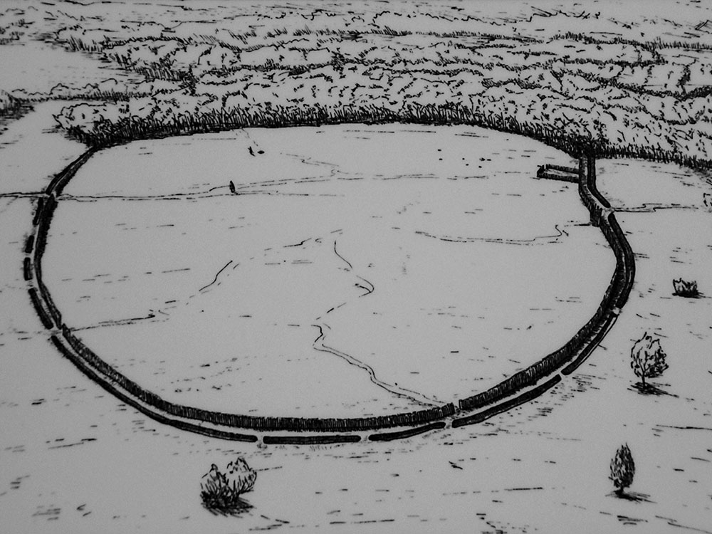

The Sligo Enigma
Sligo, Ireland — June 2009

The Event
A man identifying as "Peter Bergmann" arrived in Sligo with the clear intent of erasing his existence. Over three days, CCTV captured him leaving his hotel with purple bags of belongings, only to return empty-handed. His body was found on Rosses Point beach; all labels had been cut from his clothing, and no form of identification was ever recovered.
Evidence Locker


Current Theories
The Archive views this as a masterclass in modern anonymity.
- Terminal Intent Medical examinations revealed advanced bone cancer. It is theorized he chose Sligo as a quiet location to pass away without burdening relatives.
- Intelligence Background The meticulous nature of his "scrubbing"—avoiding cameras during disposals and removing all tags—suggests professional training in tradecraft.